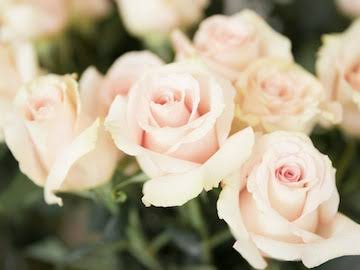
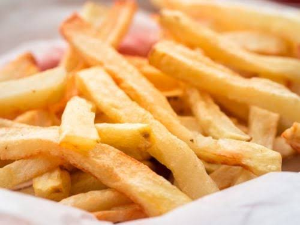

*Flower*
My Favorite flower are Roses,
Roses have that feeling of romance,
because it is widely used as symbols of Love,
Sympathy, and Sorrow.
This flower shows a beautiful pattern and
roses smell good and charming.
_______________________________________________________________________________________________________________________________________
.Time.
My Favorite time is when...
the sun starts to set,
and the different colors starts to show,
Sunsets are mesmerizing,
the moon captures my attention,
the view is beatiful,
and dazzling stars starts to appear,
while the sun disappears,
I imagine him by my side...
enjoying every second.
_______________________________________________________________________________________________________________________________________
~Person~
My Favorite Person...
is like the moon that caught my attention,
Came to my life unexpectedly...
the person that brought different colors
in my life,
the one that inspires me the most,
and person that I want to be with.
him...
<3
_______________________________________________________________________________________________________________________________________
"Food"
My Favorite Food...
Crunchy on the outside
while soft in the inside,
salty but not too salty,
can be pared with condiments
Fries...
The Food of my life.
_______________________________________________________________________________________________________________________________________